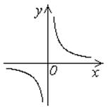
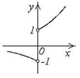
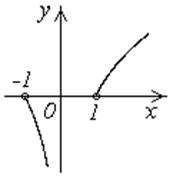

10.3. Обратная функция. Сложная функция
Функция обратима,
если каждое свое значение она принимает один раз, то есть для каждого существует только одно значение такое, что  .Тогда
функции , осуществляющей отображение
множества
.Тогда
функции , осуществляющей отображение
множества  в множество
в множество  ,
может быть сопоставлена функция , осуществляющая
отображение в ,
такое, что . Эта функция называется обратной
к
,
может быть сопоставлена функция , осуществляющая
отображение в ,
такое, что . Эта функция называется обратной
к  и обозначается .
и обозначается .
.Тогда
функции , осуществляющей отображение
множества в множество ,
может быть сопоставлена функция , осуществляющая
отображение в ,
такое, что . Эта функция называется обратной
к и обозначается .С другой стороны, для функции обратной
является функция , поэтому функции и называются
взаимно обратными.
, поэтому функции и называются
взаимно обратными.Графики функций и совпадают, но если мы хотим описать
функцию обычным образом, то есть ее аргумент
обозначить через  , а зависимую переменную
через
, а зависимую переменную
через  , то графическая иллюстрация изменится.
, то графическая иллюстрация изменится.
и совпадают, но если мы хотим описать
функцию обычным образом, то есть ее аргумент
обозначить через , а зависимую переменную
через , то графическая иллюстрация изменится.Вначале изменим направления осей; затем изменим названия
осей; в результате получаем, что графики взаимно обратных функций симметричны
относительно биссектрисы первого и третьего координатных углов, то есть линии  . Множество значений обратной функции
совпадает с областью определения
функции , а область определения обратной
функции совпадает с множеством значений
функции .
. Множество значений обратной функции
совпадает с областью определения
функции , а область определения обратной
функции совпадает с множеством значений
функции .
. Множество значений обратной функции
совпадает с областью определения
функции , а область определения обратной
функции совпадает с множеством значений
функции .
1˚. ;
обратная функция совпадает с исходной.

2˚.


Если  и
и  – функции одного переменного, то
функция
– функции одного переменного, то
функция  , определенная соотношением на области ,
называется сложной функцией или суперпозицией (композицией)
функций и и
обозначается .
, определенная соотношением на области ,
называется сложной функцией или суперпозицией (композицией)
функций и и
обозначается .
и – функции одного переменного, то
функция , определенная соотношением на области ,
называется сложной функцией или суперпозицией (композицией)
функций и и
обозначается .Операции производятся справа налево – вначале вычисляется
частное значение функции и в точке , а затем для данного числа,
рассматриваемого как аргумент, вычисляется значение функции .
и в точке , а затем для данного числа,
рассматриваемого как аргумент, вычисляется значение функции .Операция суперпозиции может применяться повторно, например,
представляет собой суперпозицию пяти операций: возведение в
квадрат, вычисление тангенса, синуса, модуля и логарифма.